Troubleshoot¶
Ezen az oldalon található leírások azt a célt szolgálják, hogy a gyakran előforduló hibákat könnyen lehessen megoldani, részletes leírás alapján. Ha valaki úgy gondolja, hogy ismer olyan hibát, ami gyakran fordul elő a gyakorlatok során és nem található itt, jelezze a gyakorlatvezetőknek egy hivatalos csatornán (email / CooSpace) és ha úgy találják a gyakorlatvezetők, az is felvételre kerül ebbe a listába!
Artifact beállítása TomCat szerverre kézzel¶
Miről ismerjük fel¶
A kézzel történő kunfigurálást akkor kell megtennünk, ha az IDE nem találta meg az artifact-ot automatikusan. Amikor a szervert beállítjuk (kiválasztottuk, hogy melyik TomCat-et szeretnénk használni) és rámegyünk a pirossal kiemelt "FIX" gombra nem jönnek elő a lehetőségek.
Erről kép:
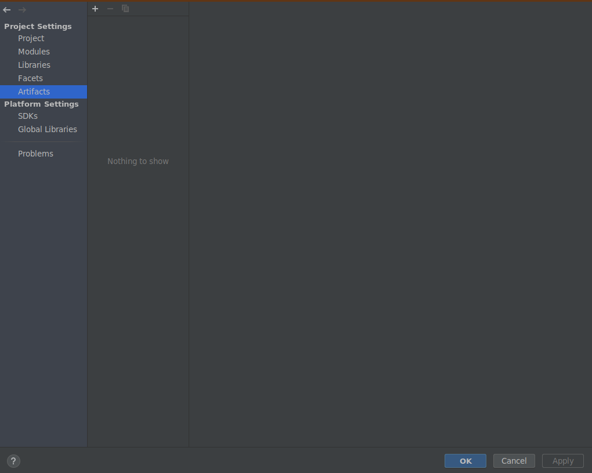
Artifact hozzáadása¶
Itt középen nem jelenik meg választható artifact. Ekkor a pluszjelre kell mennünk, hogy kézzel adjuk hozzá:
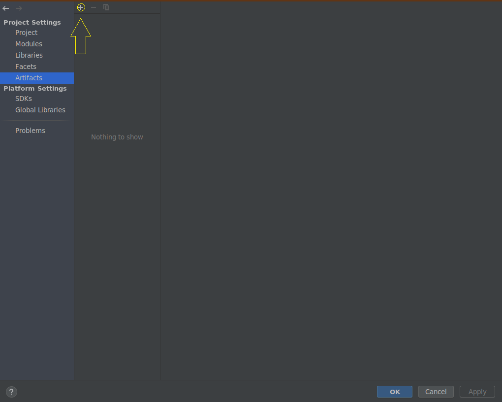
Ezután ki kell választanunk, hogy milyen artifact-ot szeretnénk hozzáadni: Web Application: Archive
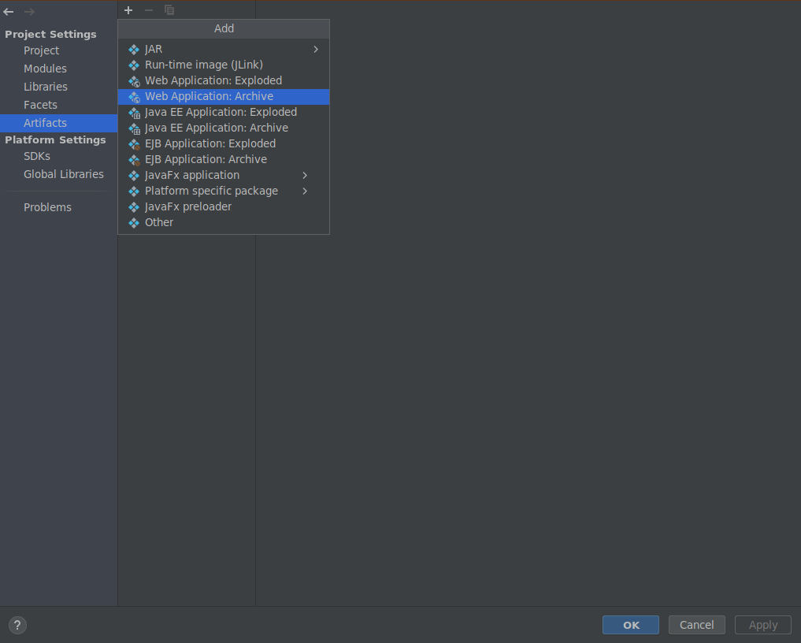
Ekkor egy új ablak jelenik meg, ahol különféle beállításokat kell megtennünk. A name adattagot írjuk át a module (Maven MultiModule Webes rész neve) nevére és az output directory-ban a kijelölt részt out/artifacts/unnamed cseréljük le a \<modul-neve>/target könyvtárra!
Átírások előtt:
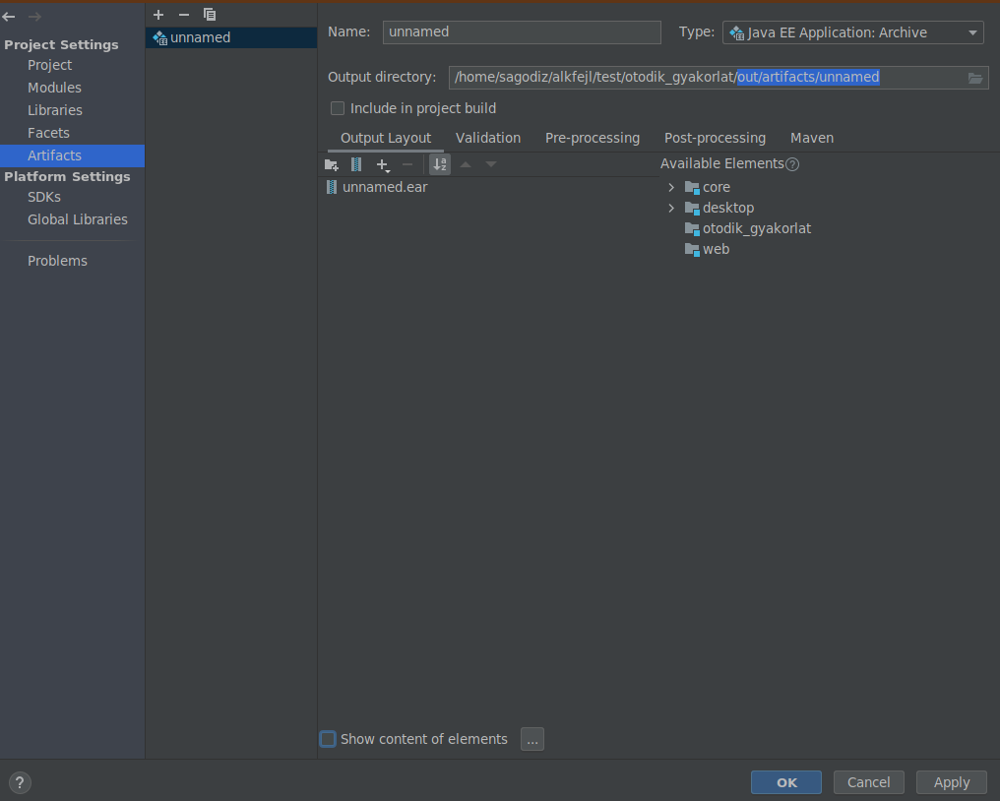
Átírások után (web modulnevet feltételezve):
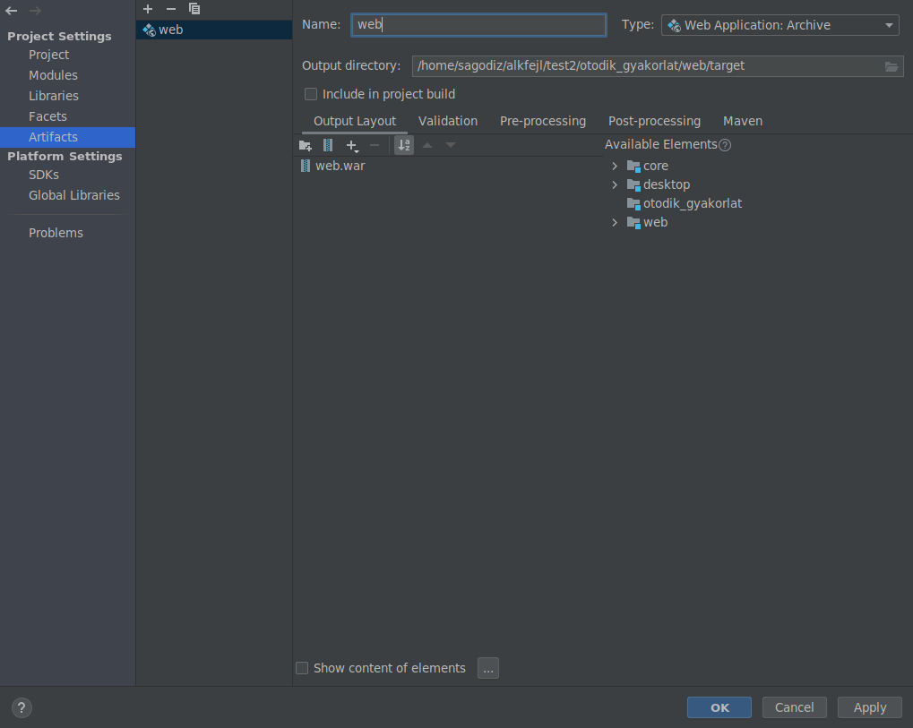
Ekkor rányomhatunk az OK-ra, majd a következő felület fogad:
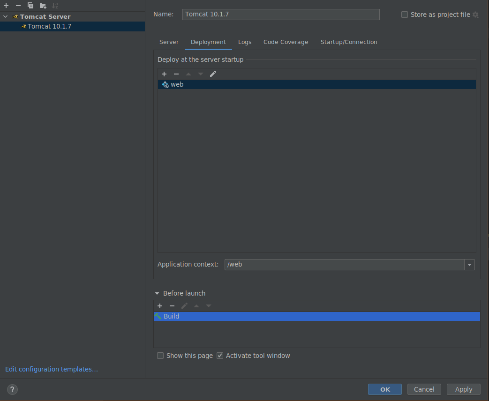
Itt látható, hogy az application context az a web (a modul neve alapján) lesz, tehát a szerver címe után még ezt kell beírni, hogy elérjük a mi tartalmunkat (ilyen mappa lesz a szerveren).
Az is látszódik, hogy a futtatás előtt különféle feladatokat futtathatunk, pl. lefordíthatjuk az alkalmazásunkat, összecsomagolhatjuk, hogy a legújabb változatot használja a szerver.
Változtatott kód¶
Menjünk a Before launch-nál található plusz jelre:
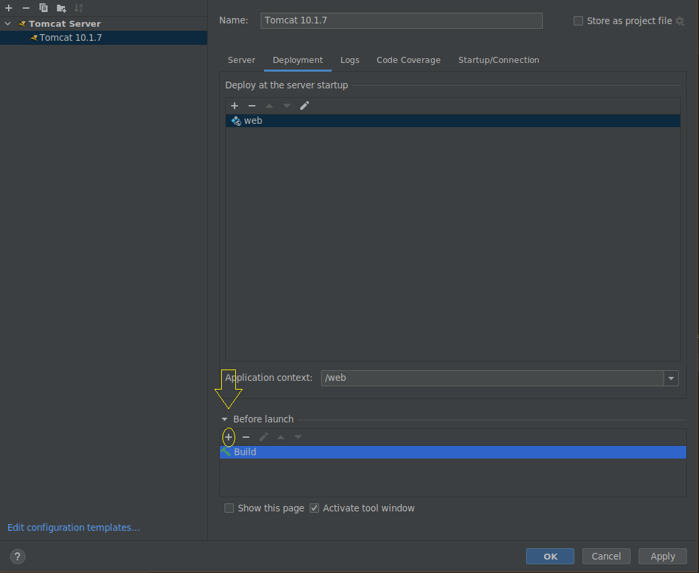
Itt válasszuk ki a Run Maven Goal-t
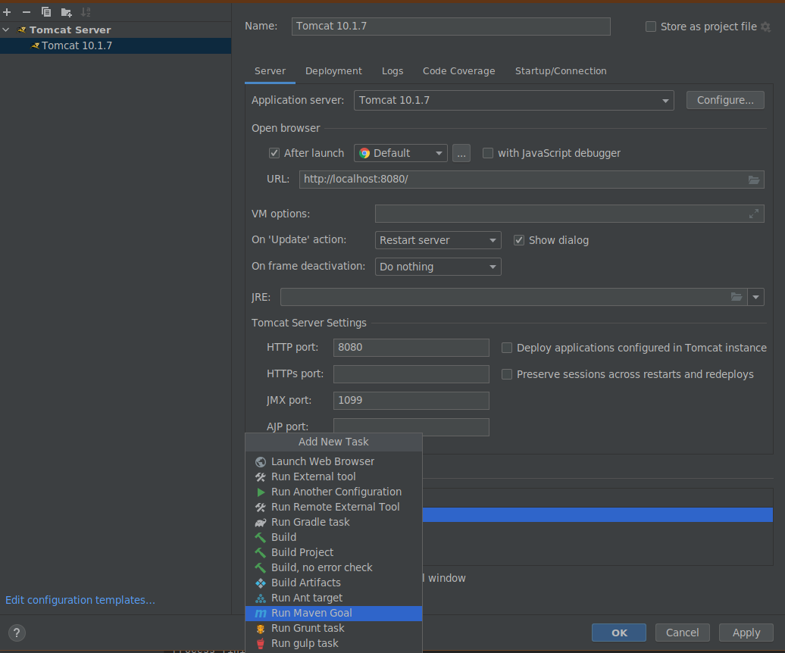
Ezután adjuk meg a kívánt maven goal-t. Most egy clean-t adunk meg, ami kitöröl mindent, majd egy package-t, ami lefordítja a projectet és összeállítja a végleges csomagot (war file).
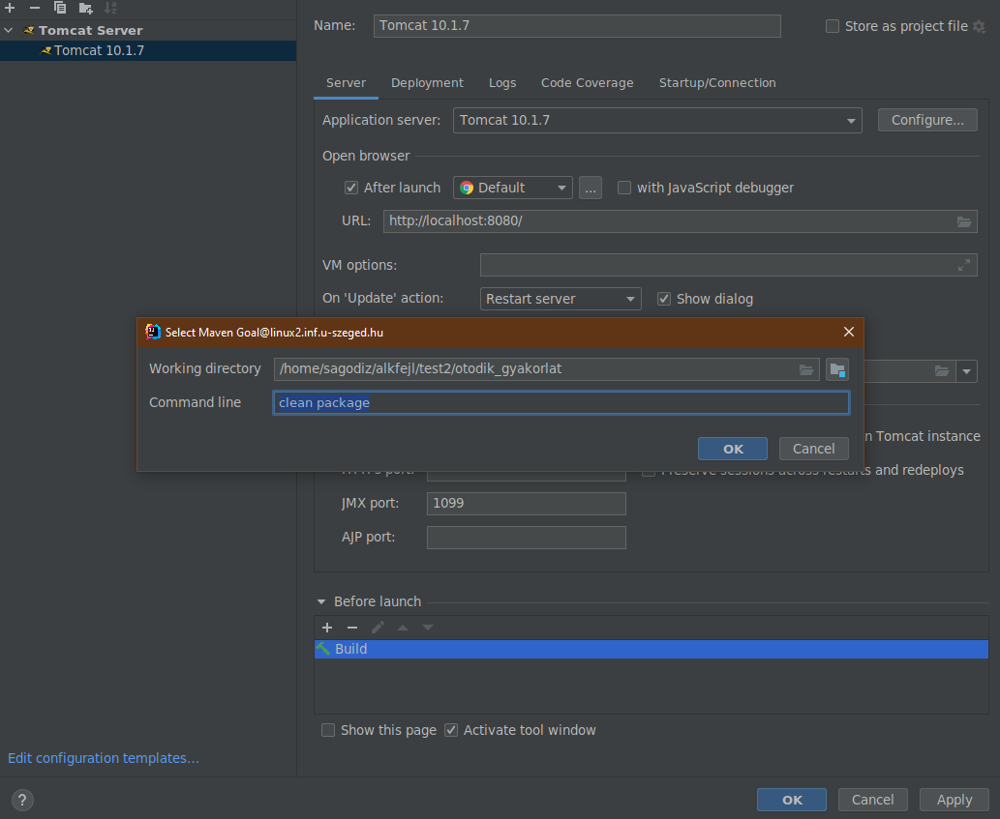
Indítási URL¶
Ha ezt beállítottuk, akkor az artifact megfelelően van konfigurálva. Már csak annyi kell, hogy az IDE amikor elindítja a böngészőt, akkor a megfelelő application context-ben indítsa el azt. Ezt az url-nél megadott részben tudjuk beírni. A pár lépéssel ezelőtti application context-re lesz szükségünk.
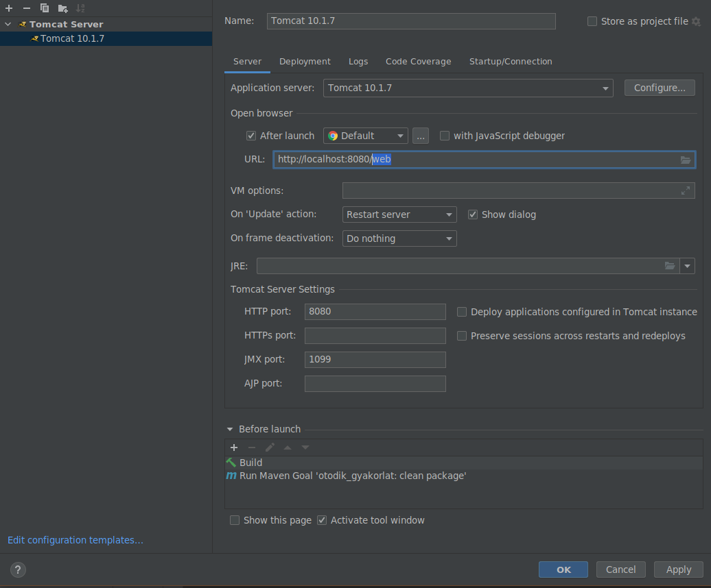
Ezzel beállítottuk az artifactot amit deploy-kor a rendszer lefordít, összerakja az új csomagot kirakja a szerverre majd elindítja a böngészőt a megfelelő url-el.
Dependency automatikus hozzáadása¶
Ha nem működne a dependency hozzáadása:
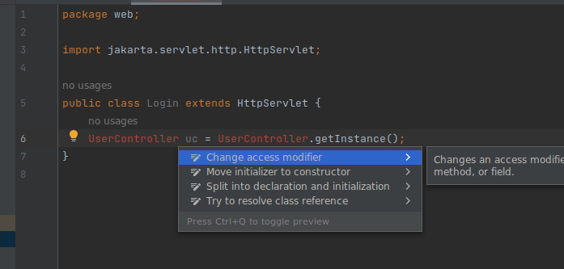
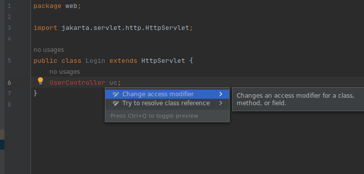
Ekkor csak a típust meghagyva az IDE megtalálja a dependency-t.
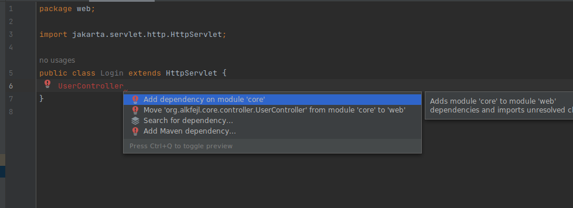
Így a Core dependency-t automatikusan hozzá lehet adni a projekthez, azonban ekkor az ide a dependency-nek egy scope-ot állít be, méghozzá compile scope-ot ami miatt futás közben a rendszer nem találja a megfelelő osztályokat.
A rossz dependency:
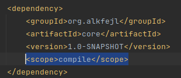
Ami a következő hibaüzenetet eredményezheti:
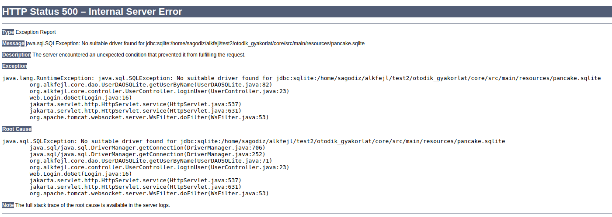
A scope-ot kitörölve megoldhatjuk a problémát.
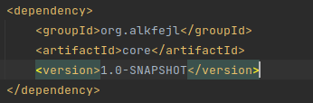
doXXX metódus super hívása¶
Az IDE a Servlet doXXX metódusainak generál super hívást. Ezt a hívást töröljük ki.
A super megvalósítás hibát küld az oldalra mint nem támogatott kérés.
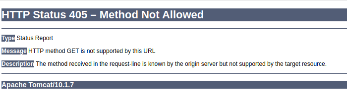
Vegyük ki a super.doXXX() hívásokat!
TomCat verzió¶
Ha az oldal nem tölti be a helyesnek tűnő osztályt, mintha nem lenne olyan útvonal, azt is ellenőrizzük, milyen verziójú TomCat szervert használunk! Tomcat 9 - javax függőségek Tomcat 10+ - jakarta függőségek
Ha rossz szerver verzió - függőség párost használunk, a projekt lefordul, de a szerver nem találja meg az osztályokat.
Jó gyakorlást!